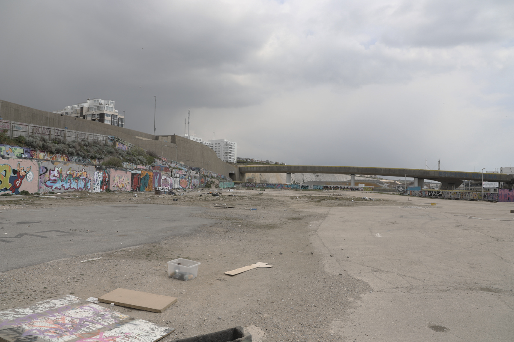
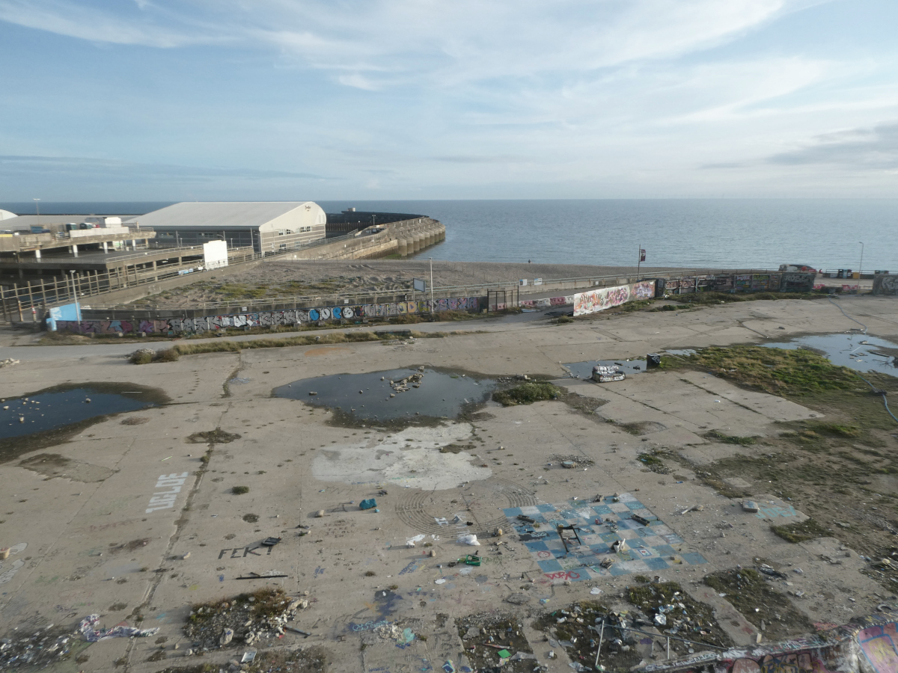

The construction of a science centre at Black Rock represents an excellent opportunity to regenerate Black Rock and the surrounding area, acting as a catalyst that encorages visitors to travel all along Madeira Drive and in to the Marina.
The National Space Centre in Leicester, a spin-off public science centre from the University of Leicester, was similarly a catalyst for the major regeneration of a previously run down and neglected area of Leicester, with a £100M Space Park for hi-tech industries recently been completed alongside the space centre in late 2021.
|  |  |
| The derelict Black Rock site, as of April 2021. | |